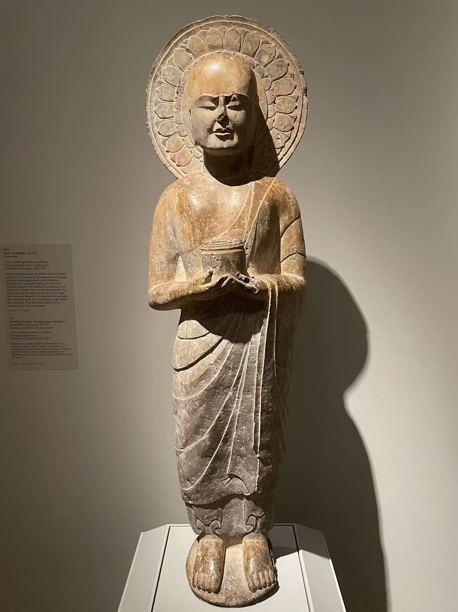
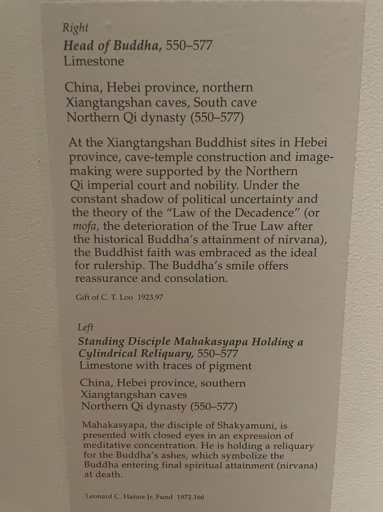

XIANGTANGSHAN / 南响堂第三至第六窟范围
持舍利容器的迦叶立像
Standing Disciple Mahakasyapa Holding a Cylindrical Reliquary


- 收藏
- 克利夫兰艺术博物馆
- 编号
- 1972.166
- 年代
- 北齐（550—577）
- 材料
- 石灰岩，残留彩绘
- 原属洞窟
- 南响堂第三至第六窟范围
作品札记
人物剃发，眼帘低垂，双手把圆筒形器物持在身前。衣纹顺身体向下落，胸前少有装饰。馆方将人物识别为弟子摩诃迦叶，并把器物解释为舍利容器。
这件立像保留彩绘痕迹，被响堂山项目联系到南响堂第三至第六窟范围。克利夫兰于1972年以汉纳基金购藏。馆方说明以佛陀涅槃后的舍利崇奉解释人物所持之物，也使它与佩戴冠饰、璎珞的菩萨立像形成区别。
资料说明
年代资料：现场展签写北齐（550—577）；克利夫兰现行网页进一步写为约550年。
现场展签

